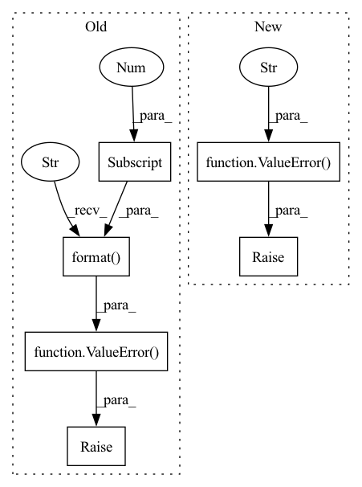

Pattern ID :31076
Before Change
.format(pos.shape[0], pos.shape[1])
)
if pos.shape[-1] != self.pos_dim:
raise ValueError(
"Expected {}-D position vector. Got {}."
.format( self.pos_dim, pos.shape[-1] )
)
if view_dir.shape[-1] != self.view_dir_dim:
raise ValueError(
"Expected {}-D view direction vector. Got {}."
.format(self.view_dir_dim, view_dir.shape[-1])After Change
// check input tensors
if (pos.ndim != 2) or (view_dir.ndim != 2):
raise ValueError(f"Expected 2D tensors. Got {pos.ndim}, {view_dir.ndim}-D tensors." )
if pos.shape[0] != view_dir.shape[0]:
raise ValueError(
f"The number of samples must match. Got {pos.shape[0]} and {view_dir.shape[0]}."
)In pattern: SUPERPATTERN
Frequency: 7
Non-data size: 6
Instances Fragment ID: 91303537
Project Name: dvelopery0115/torch-nerf
Commit Name: 0b877b31ee0fa01d5409542c7eb7b3321b200e26
Time: 2022-06-15
Author: dreamy1534@kaist.ac.kr
File Name: src/network/nerf_mlp.py
M Class Name: NeRFMLP
N Class Name: NeRFMLP
M Method Name: forward(3)
N Method Name: forward(3)
M Parent Class: nn.Module
N Parent Class: nn.Module
M File Name: src/network/nerf_mlp.py
N File Name: src/network/nerf_mlp.py
M Start Line: 62
M End Line: 80
N Start Line: 59
N End Line: 69
Before Change
// expected input shape is [1, X, Y, [Z]], exit if first dimension doesnt comply
if scrib_shape[0] != 1:
raise ValueError( "scribbles should have single channel first, received {}".format(scrib_shape[0] ))
// unfold a single prob for background into bg/fg prob (if needed)
if prob_shape[0] == 1:
prob = np.concatenate([prob, 1.0 - prob], axis=0)After Change
// expected input shape is [1, X, Y, [Z]], exit if first dimension doesnt comply
if scrib_shape[0] != 1:
raise ValueError(f"scribbles should have single channel first, received {scrib_shape[0]}" )
// unfold a single prob for background into bg/fg prob (if needed)
if prob_shape[0] == 1:
prob = np.concatenate([prob, 1.0 - prob], axis=0) Fragment ID: 91303585
Project Name: project-monai/monailabel
Commit Name: ba9e89ed1dd7100e9c7b01aad344f187b2673c16
Time: 2022-04-11
Author: jamesobutler@users.noreply.github.com
File Name: monailabel/scribbles/utils.py
M Class Name: AnonimousClass
N Class Name: AnonimousClass
M Method Name: make_iseg_unary(4)
N Method Name: make_iseg_unary(4)
M Parent Class:
N Parent Class:
M File Name: monailabel/scribbles/utils.py
N File Name: monailabel/scribbles/utils.py
M Start Line: 37
M End Line: 45
N Start Line: 45
N End Line: 45
Before Change
if not 0.0 <= eps:
raise ValueError("Invalid epsilon value: {}".format(eps))
if not 0.0 <= betas[0] < 1.0:
raise ValueError( "Invalid beta parameter at index 0: {}".format(betas[0] ))
if not 0.0 <= betas[1] < 1.0:
raise ValueError("Invalid beta parameter at index 1: {}".format(betas[1]))
defaults.update(dict(lr=lr, betas=betas, eps=eps))
super().__init__(params, defaults)After Change
if not 0.0 <= eps:
raise ValueError(f"Invalid epsilon value: {eps}")
if not 0.0 <= betas[0] < 1.0:
raise ValueError(f"Invalid beta parameter at index 0: {betas[0]}" )
if not 0.0 <= betas[1] < 1.0:
raise ValueError(f"Invalid beta parameter at index 1: {betas[1]}")
// Add the hyper-parameters to the defaults Fragment ID: 91303536
Project Name: lab-ml/nn
Commit Name: dc48f0a4e17854207c86696cb438199b66e23744
Time: 2020-12-05
Author: vpjayasiri@gmail.com
File Name: labml_nn/optimizers/__init__.py
M Class Name: GenericAdaptiveOptimizer
N Class Name: GenericAdaptiveOptimizer
M Method Name: __init__(6)
N Method Name: __init__(6)
M Parent Class: Optimizer
N Parent Class: Optimizer
M File Name: labml_nn/optimizers/__init__.py
N File Name: labml_nn/optimizers/__init__.py
M Start Line: 15
M End Line: 23
N Start Line: 59
N End Line: 78
Before Change
batch_size = v.shape[0]
else:
if batch_size != v.shape[0]:
raise ValueError(
"Key "{}" of transition major "
"attribute "{}" has invalid "
"batch size {}.".format( k, ma, v.shape[0] )
)
for sa in self._sub_attr:
sa_data = getattr(self, sa)
if np.isscalar(sa_data):
// will return true for inbuilt scalar typesAfter Change
f"Transition sub attribute "{sa}" is an invalid tensor."
)
elif sa_data.shape[0] != batch_size:
raise ValueError(
"Transition sub attribute "
f""{sa}" has invalid batch size {sa_data.shape[0]}."
)
else:
raise ValueError(
f"Transition sub attribute "{sa}" has invalid "
f"value {sa_data}, requires scalar or tensor." Fragment ID: 91303539
Project Name: iffix/machin
Commit Name: 6d2f5dd00f170cf0f6e5e9337e711039774088e7
Time: 2021-03-30
Author: hanhanmumuqq@163.com
File Name: machin/frame/transition.py
M Class Name: TransitionBase
N Class Name: TransitionBase
M Method Name: _check_validity(1)
N Method Name: _check_validity(1)
M Parent Class:
N Parent Class:
M File Name: machin/frame/transition.py
N File Name: machin/frame/transition.py
M Start Line: 180
M End Line: 221
N Start Line: 186
N End Line: 220
Before Change
if not 0.0 <= betas[0] < 1.0:
raise ValueError(f"Invalid beta parameter at index 0: {betas[0]}")
if not 0.0 <= betas[1] < 1.0:
raise ValueError(
"Invalid beta parameter at index 1: {}".format(betas[1] )
)
if not 0.0 <= beta3 < 1.0:
raise ValueError("Invalid beta3 parameter: {}".format(beta3))
defaults = dict(
lr=lr, betas=betas, beta3=beta3, eps=eps, weight_decay=weight_decayAfter Change
if not 0.0 <= betas[0] < 1.0:
raise ValueError(f"Invalid beta parameter at index 0: {betas[0]}")
if not 0.0 <= betas[1] < 1.0:
raise ValueError(f"Invalid beta parameter at index 1: {betas[1]}" )
if not 0.0 <= beta3 < 1.0:
raise ValueError(f"Invalid beta3 parameter: {beta3}")
defaults = dict(
lr=lr, betas=betas, beta3=beta3, eps=eps, weight_decay=weight_decay Fragment ID: 91303554
Project Name: jettify/pytorch-optimizer
Commit Name: 2ac4acd276ea5caa77dbe2756b2d8cf75dc89804
Time: 2020-01-12
Author: nickolainovik@gmail.com
File Name: torch_optimizer/adamod.py
M Class Name: AdaMod
N Class Name: AdaMod
M Method Name: __init__(7)
N Method Name: __init__(7)
M Parent Class: Optimizer
N Parent Class: Optimizer
M File Name: torch_optimizer/adamod.py
N File Name: torch_optimizer/adamod.py
M Start Line: 45
M End Line: 49
N Start Line: 45
N End Line: 47
Before Change
gt_info[1], lr_info[1], i))
if gt_info[2] != lr_info[2]:
raise ValueError(
"frame mismatch ({} vs. {} for the {} key)".format(
gt_info[2], lr_info[2] , i))
@staticmethod
def init_lmdb(seq_dir):
env = lmdb.open(After Change
def check_info(self, gt_keys, lr_keys):
if len(gt_keys) != len(lr_keys):
raise ValueError(
f"GT & LR contain different numbers of images ({len(gt_keys)} vs. {len(lr_keys)})" )
for i, (gt_key, lr_key) in enumerate(zip(gt_keys, lr_keys)):
gt_info = self.parse_lmdb_key(gt_key)
lr_info = self.parse_lmdb_key(lr_key) Fragment ID: 91303541
Project Name: skycrapers/tecogan-pytorch
Commit Name: 4df623fcdac1a466e55730952c476dd17ce80872
Time: 2021-07-18
Author: dengjn@zju.edu.cn
File Name: codes/data/base_dataset.py
M Class Name: BaseDataset
N Class Name: BaseDataset
M Method Name: check_info(3)
N Method Name: check_info(3)
M Parent Class: Dataset
N Parent Class: Dataset
M File Name: codes/data/base_dataset.py
N File Name: codes/data/base_dataset.py
M Start Line: 25
M End Line: 49
N Start Line: 25
N End Line: 45
Before Change
// expected input shape is [1, X, Y, [Z]], exit if first dimension doesnt comply
if scrib_shape[0] != 1:
raise ValueError( "scribbles should have single channel first, received {}".format(scrib_shape[0] ))
// unfold a single prob for background into bg/fg prob (if needed)
if prob_shape[0] == 1:
prob = np.concatenate([prob, 1.0 - prob], axis=0)After Change
// expected input shape is [1, X, Y, [Z]], exit if first dimension doesnt comply
if scrib_shape[0] != 1:
raise ValueError(f"scribbles should have single channel first, received {scrib_shape[0]}" )
// unfold a single prob for background into bg/fg prob (if needed)
if prob_shape[0] == 1:
prob = np.concatenate([prob, 1.0 - prob], axis=0) Fragment ID: 91303557
Project Name: project-monai/monailabel
Commit Name: 6986dd936460bbe9cf6f55d0f0b4124c2958e023
Time: 2022-04-11
Author: jbutler@sonovol.com
File Name: monailabel/scribbles/utils.py
M Class Name: AnonimousClass
N Class Name: AnonimousClass
M Method Name: make_iseg_unary(4)
N Method Name: make_iseg_unary(4)
M Parent Class:
N Parent Class:
M File Name: monailabel/scribbles/utils.py
N File Name: monailabel/scribbles/utils.py
M Start Line: 37
M End Line: 45
N Start Line: 45
N End Line: 45